Week 13 文字系統
2023-05-22
文字系統 | Writing Systems
結繩記事
- 文字發明前，人所使用的一種記事方法。即在一條繩子上打結。上古時期的中原地區及秘魯印地安人皆有此習慣
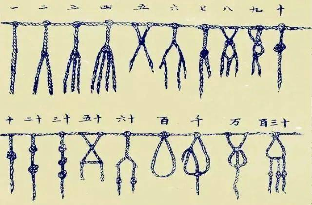
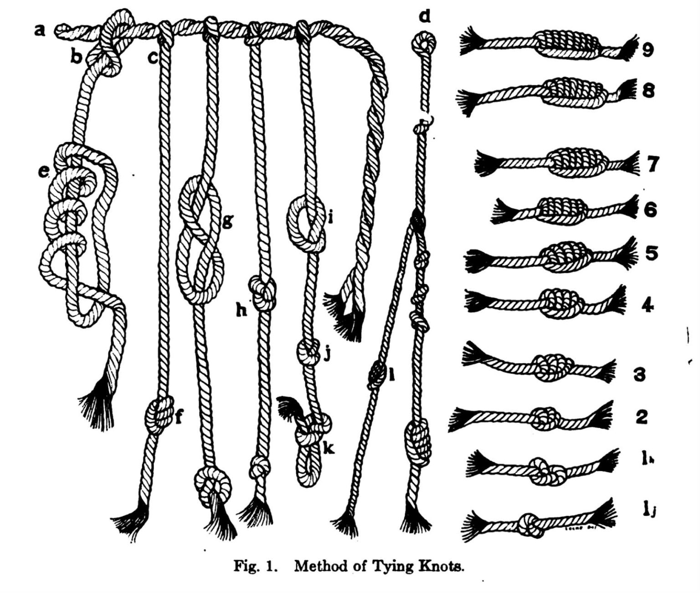
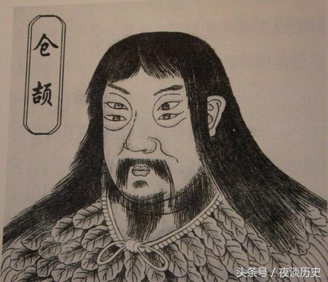【昔者倉頡作書而天雨粟，鬼夜哭。】《淮南子·本經訓》
雙瞳四目
Representing Languages
探問紀錄與表達語言的文字符號系統
‘spoken language’ vs ‘written language’ (note: writing is a fairly recent invention) 語言「也許」始於 300 -400 萬年前的直立人；文字則「相對確定」約在 1 萬年前萌芽於新石器時代的刻符與岩畫。
文字嘗試再現語言，但不是語言 Only 25% of the world’s languages have written forms.
人類文字系統
文字系統的成分
文字系統需要至少包含甚麼?
A script: a set of graphic symbols used to represent the units of a writing system.
Orthography: a set of rules and conventions for using a writing system to represent a language in a readable and understandable manner.
自由與黏着
free grapheme and bound grapheme (e.g. 變音符號 diacritic marks 只能和其他字素結合出現。法文的 `)
- 梵文中的變音符號 （黏着字素） 出現在輔音的位置各不同（上、下、前、後） क
<k>: को<ke>का<kā>कि<ki>की<kī>कु<ku>कू<kū>
- 梵文中的變音符號 （黏着字素） 出現在輔音的位置各不同（上、下、前、後） क
graphemes vs allograph 的問題；異體字。
ligature
連字（ligature） 是由兩個或多個字素合在一起的符號單位，並且在書寫時以一個單一的字形出現。例如，丹麥語的字母æ 是字母 a 和 e 的連字；英文fi是字母f和i的連字。(但這僅僅是出於印刷審美考慮，或是書寫效率，在書寫時減少抬筆的次數。)
文字簡史
- 原始文字時期
- 文字源於圖畫 (picture writing)
- 古典文字時期
- 3200 BC 西亞兩河流域的蘇美人創造「楔形文字」。
- 北非尼羅河流域的古埃及人創造「聖書字」(hieroglyphics)，使用了三千多年。
- 1300 BC 中國黃河流域殷商帝國創立「甲骨文」
- 其他：2000 BC 中美洲的「馬雅」、中國「彞文」
- 字母文字時期
- 1500 開始因應貿易需求的字母文字
- linear-B / Byblos /
- 腓尼基、希臘、拉丁字母
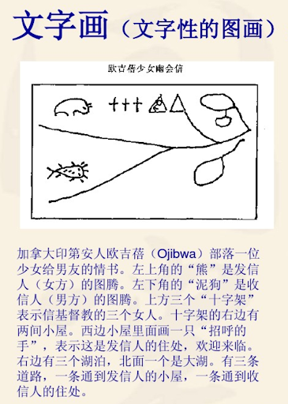
一個名爲「鼈隨妻」(turtle-following-his-wife) 的人給他的兒子（小子’little man’）捎信要他回家，並隨信附上 53 元作爲盤纏。
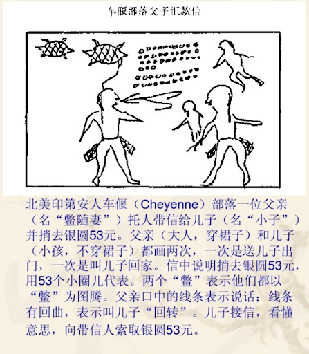
文字系統：分類與分布
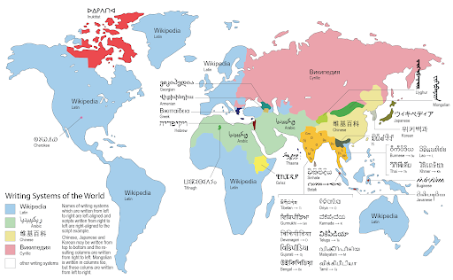從表達的功能來看
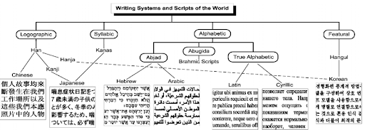Logograms 語素文字
a logogram, or logograph, is a symbol that represents a word or a morpheme. [表達想法]
two subtypes of logographic system:
pictograms: pictures or symbols that represent an object or idea and may communicate a message, but they are not direct representations of speech.
ideograms: symbols that communicate or represent an idea, though they are not necessarily pictures of actual objects or events. When a picture becomes conventionalized, it may be an ideogram, like the peace sign.
The Rebus Principle (「假借」)
但是，所有已知的 logographic writing system 都含有一些語音成分(常來自 “假借”：the use of existing symbols, purely for their sounds regardless of their meaning, to represent new words)
- When a graphic sign no longer has a visual connection to the word it represents, it becomes a phonographic symbol, standing for the sounds that represent the word.
- A single sign can then be used to represent all words with the same sound (同音字). e.g, My 曰 is a teacher.
漢字系統
語素文字或音節文字？
漢語的大量同音現象導致了漢字的「同音字」現象。(所以纔有
石室詩士施氏嗜獅這樣的文字遊戲。)
同音字
現代漢語常用的 1359 個音節形式（含聲調）中，每一個都是以平均 11 個漢字作爲其不同的書寫形式。

- 六書：（造字法）象形 (pictography)、指事 (abstract pictograms)。(組字法) 會意 (semantic extension)、形聲 (semantic-phonetic compound)。(用字法？) 假借 、轉注
練習
以【口】爲例，請列出有口參與的字，並說明其造字法。
Logograms and Phonograms
- Pictograms and ideograms are not complete writing systems for any (sound-based) language.
- Phonogram is a symbol based on sound rather than meaning. Phonographic systems include:
- syllabary (syllabic)
- alphabets (phonemic)
音節文字 Syllabic system 和 短音節文字 (moraic system)
書寫單位對應的是一個音節 (CV; CVC; V)
大部分的音節文字其實是短音節文字（onset-nucleus or coda only）。
注音符號
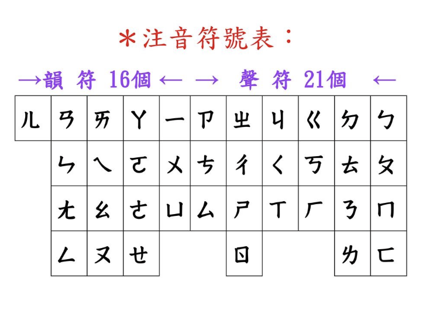Phonographic > phonemic > alphabetic (C, V)
全音素文字是以音素為單位的文字,字母表中除了子音字母, 還有母音字母。
比較常見的全音素文字有拉丁字母 (Latin)、基里爾字母 (Cyrillic)、 希臘字母 (Greek)、韓文字母 (Hangul)、回鶻/蒙古/滿文字母 (Uighur/Mongolian/Manchu script) 等。
Alphabetic
True Alphabets
A true alphabet is a writing system with symbols that mean all sorts of individual sounds, both consonants and vowels.
e.g., Roman alphabet, which is used in large parts of the world, the Greek alphabet, which is used in Greece and Cyprus, and the Cyrillic alphabet, which is used in many countries in Eastern Europe and Central Asia, where Russia had a major influence during the days of the Soviet Union.
音素文字系統的結構符號（子音和母音）通常被稱爲字母 (letter)，而這些字母排列在一起就形成了字母表 (alphabet)。
Alphabetic
Abjads 子音文字 (Consonantal alphabets)
Y cn stll rd wtht vwls.
abjad /ˈæbdʒæd/ (輔音音素文字)特點是每個符號都代表輔音，沒有元音字母。 Alphabets that do not show vowels but only consonants are called abjads.
「完全」的輔音音素文字是指文字完全沒有元音標示，如古腓尼基語 (Phoenician)。然而大部分現代的輔音音素文字，如阿拉伯文 (Arabic)、希伯萊文 (Hebrew)都「不完全」。它們可能有一 些附加元音符號。 Examples of abjads are the Arabic alphabet, which is used in much of the Muslim world, and the Hebrew alphabet used for Jewish languages like Hebrew and Yiddish. Both of these abjads are written in lines that run from right to left.
Alphabetic
Abugidas : 母音副標文字
abugida /ɑːbʊˈɡiːdə, ˈæb-/, alphasyllabary (母音附標文字) 是一類以輔音字母為主體、母音以附加符號形式標出的表音文字。
該書寫系統的主要特點是：子音字母本身即有元音,一般是/a/，構成一個音節；其它母音字母一般附加在子音字母的周圍 (前後上下均有可能) 替代預設母音，以改變音節的讀音。
南亞和東南亞的梵文文化圈普遍使用abugida作為其書寫形式。
Abugidas are alphabets where sequences of consonant+vowel are written as a unit based on the consonant letter, and one of the vowels is never written but understood by the consonant letter if no other vowel is written. Examples of abugidas are writing systems of India and Southeast Asia like Devanagari used for Hindi and Sanskrit.
特殊的 Abuigida: Canadian Aboriginal Syllabics
(子音會旋轉！)
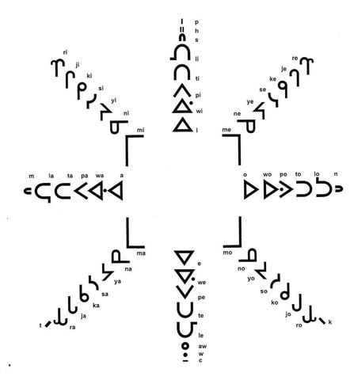 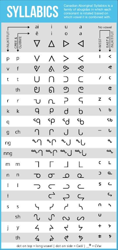
只要涉及分類，都是權宜性
Most writing systems are not purely one type.
以下文字如何分類？
練習
東巴文字 蒙古文字 楔形文字 喃字 狀字 女真文字 女書 韓國諺文 藏文 維吾爾文字 馬雅文字
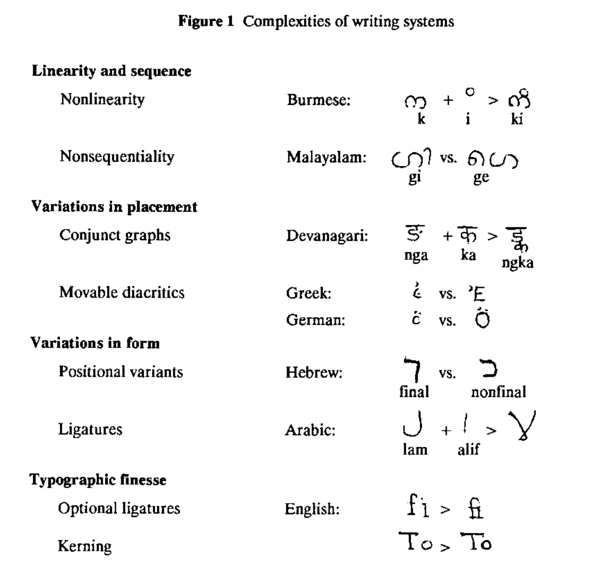